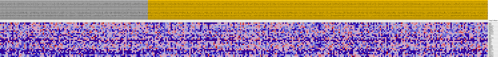
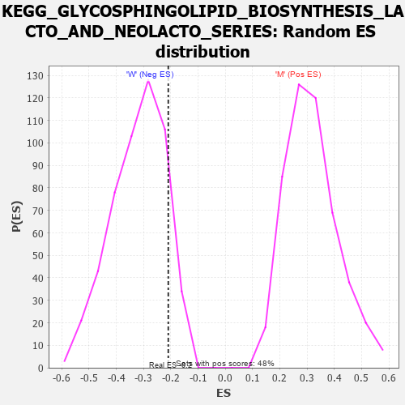

Profile of the Running ES Score & Positions of GeneSet Members on the Rank Ordered List
| Dataset | MUC16.MUC16.cls#M_versus_W.MUC16.cls#M_versus_W_repos |
| Phenotype | MUC16.cls#M_versus_W_repos |
| Upregulated in class | W |
| GeneSet | KEGG_GLYCOSPHINGOLIPID_BIOSYNTHESIS_LACTO_AND_NEOLACTO_SERIES |
| Enrichment Score (ES) | -0.20928307 |
| Normalized Enrichment Score (NES) | -0.65353525 |
| Nominal p-value | 0.8895349 |
| FDR q-value | 0.9728101 |
| FWER p-Value | 1.0 |
| PROBE | DESCRIPTION (from dataset) | GENE SYMBOL | GENE_TITLE | RANK IN GENE LIST | RANK METRIC SCORE | RUNNING ES | CORE ENRICHMENT | |
|---|---|---|---|---|---|---|---|---|
| 1 | FUT3 | na | 1342 | 0.136 | 0.0538 | Yes | ||
| 2 | FUT4 | na | 1423 | 0.133 | 0.1287 | Yes | ||
| 3 | B4GALT3 | na | 2366 | 0.108 | 0.1736 | Yes | ||
| 4 | B3GNT3 | na | 6026 | 0.058 | 0.1408 | Yes | ||
| 5 | B4GALT1 | na | 6756 | 0.051 | 0.1568 | Yes | ||
| 6 | B3GNT4 | na | 7233 | 0.047 | 0.1752 | Yes | ||
| 7 | ST3GAL4 | na | 8444 | 0.037 | 0.1747 | No | ||
| 8 | B4GALT2 | na | 10806 | 0.019 | 0.1428 | No | ||
| 9 | ST3GAL6 | na | 11127 | 0.017 | 0.1466 | No | ||
| 10 | ABO | na | 12032 | 0.011 | 0.1365 | No | ||
| 11 | FUT7 | na | 12656 | 0.007 | 0.1290 | No | ||
| 12 | B4GALT4 | na | 13397 | 0.002 | 0.1168 | No | ||
| 13 | FUT6 | na | 17185 | -0.011 | 0.0547 | No | ||
| 14 | FUT5 | na | 17869 | -0.015 | 0.0510 | No | ||
| 15 | GCNT2 | na | 18447 | -0.018 | 0.0507 | No | ||
| 16 | FUT1 | na | 20419 | -0.027 | 0.0305 | No | ||
| 17 | FUT2 | na | 24502 | -0.044 | -0.0181 | No | ||
| 18 | B3GNT5 | na | 26160 | -0.051 | -0.0192 | No | ||
| 19 | B3GNT2 | na | 30415 | -0.065 | -0.0588 | No | ||
| 20 | B4GAT1 | na | 33213 | -0.074 | -0.0670 | No | ||
| 21 | B3GALT5 | na | 34629 | -0.079 | -0.0476 | No | ||
| 22 | FUT9 | na | 39500 | -0.094 | -0.0820 | No | ||
| 23 | B3GALT2 | na | 41987 | -0.102 | -0.0684 | No | ||
| 24 | B3GALT1 | na | 49771 | -0.138 | -0.1302 | No | ||
| 25 | ST3GAL3 | na | 53634 | -0.182 | -0.0959 | No | ||
| 26 | ST8SIA1 | na | 54720 | -0.219 | 0.0099 | No |

